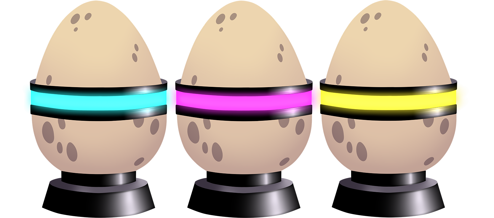
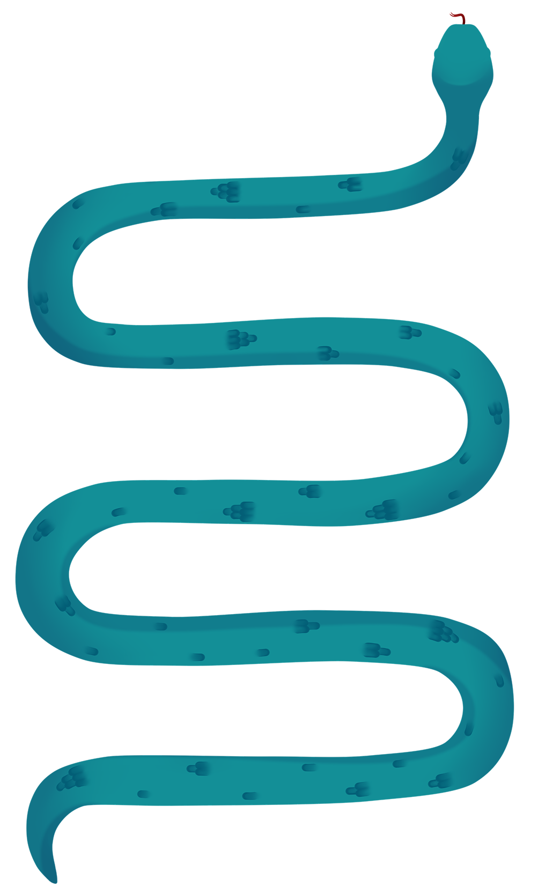

Space Snakes
Space Snakes es un juego Win to Earn inspirado en los populares juegos de web como slither.io y Little Big Snake centrándonos en una temática más futurista y espacial, teniendo como protagonista del proyecto las serpientes.
ABOUT
RED
Se usará la Bsc, debido a su bajo coste por transacción el cual ayudará a que la inversión que se realice en Space Snakes sea la más fiel posible a la cantidad del jugador que quiere apostar.
WIN TO EARN
- Los participantes al juego pagan el coste de entrada en la criptomoneda Busd.
- Los tres primeros que lleguen a “X” masa, se reparten el premio en Busd, respectivamente.
- Los jugadores restantes, no reciben ningún tipo de premio y pierden lo apostado.
ECONOMÍA
- Se usará la criptomoneda Busd, Stablecoin creada por binance.
- Sin Token, sin supply ilimitados, sin Problemas de Sostenibilidad, sin pérdidas de
valor,
solo Busd. - Ganarás lo recaudado en la partida en Busd, tus Busd siempre valdrán lo mismo.
VENTAJAS DE SPACE SNAKES FRENTE A OTROS JUEGOS NFTS
- Juego basado en uno existente con éxito, nos apoyaremos en el éxito de juegos
como slither.io, y littlebigsnake, para crear Space Snakes. - Economía sostenible. Lo que se apuesta por partida se lo lleva el ganador,
no hay tokenomics ocultos. - Se premia la habilidad, solo los tres primeros se llevarán premio.
- Utilidad real al NFT y ventajas diarias (free game, posibilidad de ganar tickets, etc).
NFT
Se van a vender un total de 50.000 NFT’s en la Wave 1. Los Nfts de la Space Snake te darán acceso a todo el ecosistema del proyecto. serán huevos de serpientes, llamados Space Eggs, serán todos iguales, no habrá rarezas en los nfts, pero dentro del ecosistema podrás hacerte con skins y piezas Épicas.
PARTIDA GRATUITA
Cada día los poseedores de un Space Egg podrán jugar una partida gratuita diaria, los ganadores se llevarán llaves donde podrán usarlas en el marketplace y Space Casino (Lottery).
ROADMAP
GAMEPLAY
El juego será creado por un estudio de videojuegos con quien tenemos relación. Estos van a estar apoyando el proyecto desde su creación y en todas sus actualizaciones.
El primer lanzamiento del juego pretende ser en web al estilo slither.io. Donde el jugador
controla su serpiente con el ratón y con la tecla espaciadora o click izquierdo del ratón te
permite esprintar. El juego consiste en acumular masa y crecer. Esto se logra derrotando a
los enemigos y alimentando a tu serpiente con la comida que aparece en el mapa.
El juego puede evolucionar con mejoras del estilo; mini–juegos dentro del mismo gameplay,
utilidad a las skins, creación de alianzas o equipos en el propio juego, recompensas por
conseguir hitos, etc.
UTILIDAD NFT
En el proyecto Space Snakes los NFTs juegan un papel fundamental. Vamos a lanzar X Space Eggs de forma progresiva en distintas oleadas de venta. El hecho de ser propietario de uno de los Space Eggs de la colección te otorgará estas ventajas:
- Acceso al juego Space Snakes.
- Acceso al juego Space Casino // Space Lottery
- Opción de jugar 1 partida de forma gratuita. (En esta los ganadores recibirán llaves).
- Acceso a SpaceDAO.
SISTEMA DE LOTERÍA
La web de Space Snakes tiene la integración de un sistema de mini-games. En las salas de juegos el usuario va a poder usar sus llaves recibidas por ser ganador (o TOP5) en las partidas de Space Snakes. Vamos a ofrecer también la opción de jugar en diferentes modalidades y conseguir grandes recompensas e incluso de acumular tus llaves y premios para abrir cofres.
MARKETPLACE SKINS
Podrás comprar skins para tu Snake y que se vea diferente en partida, se compara con llaves que hayas ganado en partidas o compradas en nuestro Swap.
PARTIDAS DIARIAS
Diferentes franjas horarias de juego para controlar la demanda:
- (15:00 17:00 20:00 23:00 1:00)
- Partidas gratuitas (poseedores del NFT): (14:30 16:30 19:30 22:30 00:30).
A futuro la intención de los creadores es la de lograr maximizar el número de partidas/día
en función a la demanda y crecimiento del juego.